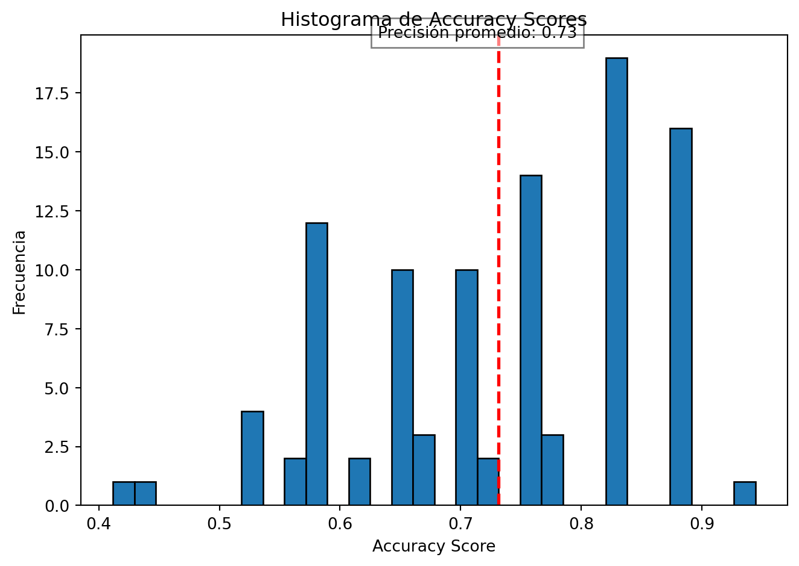
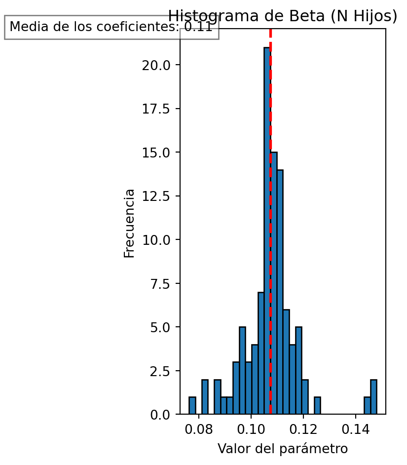

# Importamos numpy para realizar operaciones numéricas eficientes.
import numpy as np
# Pandas nos permitirá trabajar con conjuntos de datos estructurados.
import pandas as pd
# Desde sklearn.model_selection importaremos funciones para dividir conjuntos de datos y realizar validación cruzada.
from sklearn.model_selection import train_test_split, KFold
# Utilizaremos sklearn.preprocessing para preprocesar nuestros datos antes de entrenar modelos de aprendizaje automático.
from sklearn.preprocessing import StandardScaler
# sklearn.metrics nos proporcionará métricas para evaluar el rendimiento de nuestros modelos.
from sklearn.metrics import accuracy_score
# statsmodels.api nos permitirá realizar análisis estadísticos más detallados y estimación de modelos.
import statsmodels.api as sm
# Por último, matplotlib.pyplot nos ayudará a visualizar nuestros datos y resultados.
import matplotlib.pyplot as pltIntro to Python: Actividad final
Introducción al lenguaje de programación Python para el análisis estadístico
Introducción
Bienvenidos al documento final del curso de Introducción a Python para Análisis Estadístico. En este documento, encontrarán una serie de ejercicios diseñados para poner en práctica los conocimientos adquiridos a lo largo del curso y aplicarlos en un contexto práctico de análisis de datos.
Durante el curso, hemos explorado los fundamentos de la programación en Python y su aplicación en el análisis estadístico. Desde la manipulación de datos hasta la implementación de modelos estadísticos, hemos aprendido cómo utilizar las herramientas y bibliotecas disponibles en Python para resolver problemas reales en el campo de la estadística y la ciencia de datos.
En este documento, nos centraremos en un conjunto de datos de la Encuesta Nacional de Desnutrición Infantil (ENDI) del Ecuador 2023. Utilizando este conjunto de datos como caso de estudio, abordaremos una serie de ejercicios que nos permitirán explorar y analizar la desnutrición crónica infantil desde una perspectiva estadística.
Cada ejercicio está diseñado para guiarlos a través de diferentes aspectos del análisis de datos, desde la exploración inicial hasta la evaluación de modelos estadísticos. Además, se proporcionarán instrucciones claras y comentarios útiles para ayudarlos a completar cada ejercicio de manera efectiva.
Esperamos que este documento les brinde la oportunidad de consolidar sus habilidades en Python y análisis estadístico, y les permita aplicar estos conocimientos en futuros proyectos y desafíos en el campo de la ciencia de datos.
¡Comencemos!
Lectura de datos y un recordatorio
Antes de comenzar con cualquier análisis o tarea en {python}, es crucial asegurarnos de tener acceso a todas las herramientas necesarias. En este caso, estamos utilizando varios módulos de {python} que proporcionan funcionalidades específicas para análisis estadísticos y de aprendizaje automático.
Es importante comenzar con la importación de estos módulos al principio del script por varias razones:
Claridad y Organización: Importar los módulos al principio del script permite a cualquier persona que lea nuestro código comprender rápidamente qué herramientas estamos utilizando para el análisis.
Resolución de Dependencias: Al importar los módulos al principio, podemos identificar cualquier dependencia faltante antes de proceder con el análisis. Si algún módulo no está instalado, podemos instalarlo fácilmente utilizando la herramienta pip de {python}.
Mantenimiento y Actualización: Mantener todas las importaciones en un solo lugar facilita la tarea de mantener nuestro código actualizado. Si necesitamos agregar, eliminar o actualizar un módulo, sabemos exactamente dónde hacerlo.
Legibilidad del Código: Importar módulos al principio del script ayuda a mantener nuestro código limpio y legible. Los desarrolladores pueden escanear rápidamente las importaciones para comprender qué funcionalidades estamos utilizando en nuestro código.
Recuerda, si algún módulo no está instalado en su sistema, puede instalarlo fácilmente utilizando pip. Por ejemplo, si necesita instalar el módulo pandas, puede ejecutar el siguiente comando en su terminal o consola:
# En tu terminal:
pip install pandasA continuación, importaremos los módulos necesarios para nuestro análisis.
Para empezar vamos a realizar la carga del archivo de datos en formato CSV llamado “sample_endi_model_10p.txt” utilizando la función pd.read_csv() de la biblioteca pandas. Este archivo contiene una muestra del 10% de la base de datos de la Encuesta Nacional de Desnutrición Infantil (ENDI) del Ecuador.
Antes de profundizar en la explicación de la ENDI del Ecuador y las variables disponibles en la base de datos:
datos = pd.read_csv("data\sample_endi_model_10p.txt", sep=";")- El parámetro
sep=";"especifica que el separador de campos en el archivo CSV es “;”, lo que indica que es un archivo CSV con campos separados por punto y coma.
La Encuesta Nacional de Desnutrición Infantil (ENDI) del Ecuador es un estudio estadístico que se lleva a cabo periódicamente para evaluar el estado nutricional de los niños en el país. Este estudio recopila información sobre diversos factores que pueden influir en la desnutrición infantil, como condiciones socioeconómicas, acceso a servicios básicos, y características del hogar y la comunidad.
Las variables disponibles en la base de datos son las siguientes:
sexo: Género del niño.etnia: Autoidentificación étnica del niño.dcronica: Dummy para niños con desnutrición crónica igual a 1.region: Región donde vive el niño.n_hijos: Número de hijos con los que vive el niño.tipo_de_piso: Tipo de piso de la vivienda del niño.espacio_lavado: Si la vivienda dispone de espacio de lavado de manos.categoria_seguridad_alimentaria: Categoría de seguridad alimentaria del hogar del niño.condicion_empleo: Condición de empleo de la madre del niño.quintil: Quintil de ingreso del hogar.categoria_cocina: Manera en que cocina los alimentos el hogar del niño.categoria_agua: Categoría de acceso al agua del hogar del niño.serv_hig: Tipo de servicio higiénico del hogar del niño.fexp_nino: Factor de expansión asociado al niño.
Con estos datos, se pueden realizar diversas análisis y estudios relacionados con la desnutrición crónica infantil, como:
- Identificación de factores de riesgo asociados a la desnutrición crónica.
- Evaluación de la relación entre las condiciones socioeconómicas y la desnutrición infantil.
- Análisis de las disparidades regionales en la prevalencia de la desnutrición infantil.
- Desarrollo de modelos predictivos para predecir la desnutrición crónica en niños.
Limpieza de datos
Aquí te recordamos cómo eliminamos las filas con valores nulos en la columna “dcronica”, que nos indica la desnutrición crónica de los niños:
datos = datos[~datos["dcronica"].isna()]Ahora, seleccionamos solo las variables que consideramos relevantes para nuestro análisis. En este caso, estamos interesados en el número de hijos, la región, el sexo y la condición laboral de la madre:
variables = ['n_hijos', 'region', 'sexo', 'condicion_empleo']Luego, agrupamos los datos por la condición laboral de la madre para ver cuántos niños hay en cada categoría:
datos.groupby("condicion_empleo").size()condicion_empleo
Desempleada 940
Empleada 1240
Inactiva 14
Menor a 15 años 3
dtype: int64Utilizamos un bucle for para recorrer cada variable en nuestra lista variables y eliminar las filas con valores nulos en esa variable:
for i in variables:
datos = datos[~datos[i].isna()]Ahora, agrupamos los datos por la región donde viven los niños para ver cuántos niños hay en cada región:
datos.groupby("region").size()region
1.0 1055
2.0 661
3.0 435
dtype: int64Por último, convertimos los códigos numéricos de las regiones en etiquetas más comprensibles:
datos["region"] = datos["region"].apply(lambda x: "Costa" if x == 1 else "Sierra" if x == 2 else "Oriente")Este proceso nos permite preparar la base de datos para un análisis más detallado sobre la desnutrición crónica infantil y su relación con diferentes variables.
Transformaciones de variables
Vamos a realizar una serie de transformaciones en nuestros datos para prepararlos para el análisis. Primero, definimos las variables categóricas y numéricas que utilizaremos en nuestro análisis:
variables_categoricas = ['region', 'sexo', 'condicion_empleo']
variables_numericas = ['n_hijos']Luego, creamos un transformador para estandarizar las variables numéricas y una copia de nuestros datos para no modificar el conjunto original:
transformador = StandardScaler()
datos_escalados = datos.copy()Ahora, estandarizamos las variables numéricas utilizando el transformador:
datos_escalados[variables_numericas] = transformador.fit_transform(datos_escalados[variables_numericas])A continuación, convertimos las variables categóricas en variables dummy utilizando one-hot encoding:
datos_dummies = pd.get_dummies(datos_escalados, columns=variables_categoricas, drop_first=True)Seleccionamos las variables predictoras (X) y la variable objetivo (y) para nuestro modelo:
X = datos_dummies[['n_hijos', 'region_Sierra', 'sexo_Mujer',
'condicion_empleo_Empleada', 'condicion_empleo_Inactiva', 'condicion_empleo_Menor a 15 años']]
y = datos_dummies["dcronica"]Por último, definimos los pesos asociados a cada observación para considerar el diseño muestral:
weights = datos_dummies['fexp_nino']Estas transformaciones nos permiten preparar los datos para construir un modelo predictivo de desnutrición crónica infantil, teniendo en cuenta tanto las variables categóricas como las numéricas y el diseño muestral de la encuesta.
Separación de las muestras en entramiento (train) y prubea (test)
Ahora dividiremos nuestros datos en conjuntos de entrenamiento y prueba para poder evaluar el rendimiento de nuestro modelo. Utilizaremos un 80% de los datos para entrenamiento y un 20% para pruebas:
X_train, X_test, y_train, y_test, weights_train, weights_test = train_test_split(X, y, weights, test_size=0.2, random_state=42)Es importante tener en cuenta que para trabajar con modelos Logit, necesitamos que todas nuestras variables sean numéricas. Por lo tanto, vamos a asegurarnos de que esto sea así:
# Convertimos todas las variables a tipo numérico
X_train = X_train.apply(pd.to_numeric, errors='coerce')
y_train = y_train.apply(pd.to_numeric, errors='coerce')
# Convertimos las variables a tipo entero
variables = X_train.columns
for i in variables:
X_train[i] = X_train[i].astype(int)
X_test[i] = X_test[i].astype(int)
y_train = y_train.astype(int)Esto garantiza que todas las variables de entrenamiento sean numéricas y de tipo entero, lo que nos permitirá trabajar con modelos Logit correctamente.
Ajuste del modelo
Ahora que hemos preparado nuestros datos, podemos proceder a ajustar un modelo de regresión logística. Utilizaremos el método Logit de la biblioteca statsmodels:
modelo = sm.Logit(y_train, X_train)
result = modelo.fit()
print(result.summary())Optimization terminated successfully.
Current function value: 0.529597
Iterations 18
Logit Regression Results
==============================================================================
Dep. Variable: dcronica No. Observations: 1720
Model: Logit Df Residuals: 1714
Method: MLE Df Model: 5
Date: Wed, 14 Feb 2024 Pseudo R-squ.: -0.06524
Time: 21:34:05 Log-Likelihood: -910.91
converged: True LL-Null: -855.12
Covariance Type: nonrobust LLR p-value: 1.000
====================================================================================================
coef std err z P>|z| [0.025 0.975]
----------------------------------------------------------------------------------------------------
n_hijos 0.1073 0.090 1.192 0.233 -0.069 0.284
region_Sierra -1.0679 0.130 -8.232 0.000 -1.322 -0.814
sexo_Mujer -0.7218 0.102 -7.099 0.000 -0.921 -0.522
condicion_empleo_Empleada -0.8897 0.092 -9.646 0.000 -1.070 -0.709
condicion_empleo_Inactiva -1.5717 1.084 -1.449 0.147 -3.697 0.554
condicion_empleo_Menor a 15 años -47.9399 1.64e+10 -2.92e-09 1.000 -3.21e+10 3.21e+10
====================================================================================================El resumen del modelo nos proporcionará información sobre los coeficientes estimados y su significancia estadística. Vamos a extraer estos coeficientes y organizarlos en un DataFrame para una mejor visualización:
# Extraemos los coeficientes y los almacenamos en un DataFrame
coeficientes = result.params
df_coeficientes = pd.DataFrame(coeficientes).reset_index()
df_coeficientes.columns = ['Variable', 'Coeficiente']
# Creamos una tabla pivote para una mejor visualización
df_pivot = df_coeficientes.pivot_table(columns='Variable', values='Coeficiente')
df_pivot.reset_index(drop=True, inplace=True)Ahora que hemos ajustado nuestro modelo, podemos realizar predicciones en el conjunto de prueba y evaluar su rendimiento:
# Realizamos predicciones en el conjunto de prueba
predictions = result.predict(X_test)
# Convertimos las probabilidades en clases binarias
predictions_class = (predictions > 0.5).astype(int)
# Comparamos las predicciones con los valores reales
predictions_class == y_test1211 False
1896 True
1013 True
788 True
908 True
...
1916 True
463 True
570 False
27 True
2075 True
Length: 431, dtype: boolEste proceso nos permite evaluar cómo se desempeña nuestro modelo en el conjunto de prueba en términos de precisión de las predicciones.
Validación cruzada
Vamos a realizar una validación cruzada con 100 pliegues para evaluar el rendimiento de nuestro modelo de regresión logística en el conjunto de entrenamiento:
# 100 folds:
kf = KFold(n_splits=100)
accuracy_scores = []
df_params = pd.DataFrame()
for train_index, test_index in kf.split(X_train):
# aleatorizamos los folds en las partes necesarias:
X_train_fold, X_test_fold = X_train.iloc[train_index], X_train.iloc[test_index]
y_train_fold, y_test_fold = y_train.iloc[train_index], y_train.iloc[test_index]
weights_train_fold, weights_test_fold = weights_train.iloc[train_index], weights_train.iloc[test_index]
# Ajustamos un modelo de regresión logística en el pliegue de entrenamiento
log_reg = sm.Logit(y_train_fold, X_train_fold)
result_reg = log_reg.fit()
# Extraemos los coeficientes y los organizamos en un DataFrame
coeficientes = result_reg.params
df_coeficientes = pd.DataFrame(coeficientes).reset_index()
df_coeficientes.columns = ['Variable', 'Coeficiente']
df_pivot = df_coeficientes.pivot_table(columns='Variable', values='Coeficiente')
df_pivot.reset_index(drop=True, inplace=True)
# Realizamos predicciones en el pliegue de prueba
predictions = result_reg.predict(X_test_fold)
predictions = (predictions >= 0.5).astype(int)
# Calculamos la precisión del modelo en el pliegue de prueba
accuracy = accuracy_score(y_test_fold, predictions)
accuracy_scores.append(accuracy)
# Concatenamos los coeficientes estimados en cada pliegue en un DataFrame
df_params = pd.concat([df_params, df_pivot], ignore_index=True)
print(f"Precisión promedio de validación cruzada: {np.mean(accuracy_scores)}")Optimization terminated successfully.
Current function value: 0.530069
Iterations 18
Optimization terminated successfully.
Current function value: 0.529505
Iterations 18
Optimization terminated successfully.
Current function value: 0.530188
Iterations 18
Optimization terminated successfully.
Current function value: 0.528328
Iterations 18
Optimization terminated successfully.
Current function value: 0.531018
Iterations 18
Optimization terminated successfully.
Current function value: 0.530621
Iterations 18
Optimization terminated successfully.
Current function value: 0.529512
Iterations 18
Optimization terminated successfully.
Current function value: 0.529573
Iterations 18Optimization terminated successfully.
Current function value: 0.528902
Iterations 18
Optimization terminated successfully.
Current function value: 0.531639
Iterations 18
Optimization terminated successfully.
Current function value: 0.530856
Iterations 18Optimization terminated successfully.
Current function value: 0.531742
Iterations 18
Warning: Maximum number of iterations has been exceeded.
Current function value: 0.527758
Iterations: 35
Optimization terminated successfully.
Current function value: 0.530595
Iterations 18
Optimization terminated successfully.
Current function value: 0.530178
Iterations 18
Optimization terminated successfully.
Current function value: 0.527836
Iterations 18
Optimization terminated successfully.
Current function value: 0.531745
Iterations 18
Optimization terminated successfully.
Current function value: 0.529740
Iterations 18Optimization terminated successfully.
Current function value: 0.527417
Iterations 18
Optimization terminated successfully.
Current function value: 0.525987
Iterations 18
Optimization terminated successfully.
Current function value: 0.529633
Iterations 18
Optimization terminated successfully.
Current function value: 0.525029
Iterations 18C:\Users\alex_ergostats\AppData\Local\Programs\Python\Python311\Lib\site-packages\statsmodels\base\model.py:607: ConvergenceWarning:
Maximum Likelihood optimization failed to converge. Check mle_retvals
Optimization terminated successfully.
Current function value: 0.529789
Iterations 18
Optimization terminated successfully.
Current function value: 0.529319
Iterations 18
Optimization terminated successfully.
Current function value: 0.529186
Iterations 18
Optimization terminated successfully.
Current function value: 0.529393
Iterations 18
Optimization terminated successfully.
Current function value: 0.528907
Iterations 18
Optimization terminated successfully.
Current function value: 0.529872
Iterations 18
Optimization terminated successfully.
Current function value: 0.529278
Iterations 18Optimization terminated successfully.
Current function value: 0.530273
Iterations 18
Optimization terminated successfully.
Current function value: 0.529701
Iterations 18
Optimization terminated successfully.
Current function value: 0.528752
Iterations 18Optimization terminated successfully.
Current function value: 0.530632
Iterations 18
Optimization terminated successfully.
Current function value: 0.526996
Iterations 18
Optimization terminated successfully.
Current function value: 0.530541
Iterations 18
Optimization terminated successfully.
Current function value: 0.529060
Iterations 18
Optimization terminated successfully.
Current function value: 0.530542
Iterations 18
Optimization terminated successfully.
Current function value: 0.529468
Iterations 18
Optimization terminated successfully.
Current function value: 0.531124
Iterations 18
Optimization terminated successfully.
Current function value: 0.530447
Iterations 18Optimization terminated successfully.
Current function value: 0.532087
Iterations 18
Optimization terminated successfully.
Current function value: 0.530387
Iterations 18
Optimization terminated successfully.
Current function value: 0.528925
Iterations 18Optimization terminated successfully.
Current function value: 0.531692
Iterations 18
Optimization terminated successfully.
Current function value: 0.531455
Iterations 18
Optimization terminated successfully.
Current function value: 0.530713
Iterations 18
Optimization terminated successfully.
Current function value: 0.531512
Iterations 18
Optimization terminated successfully.
Current function value: 0.529637
Iterations 18
Optimization terminated successfully.
Current function value: 0.527495
Iterations 18
Optimization terminated successfully.
Current function value: 0.528311
Iterations 18
Optimization terminated successfully.
Current function value: 0.529134
Iterations 18Optimization terminated successfully.
Current function value: 0.528458
Iterations 18
Optimization terminated successfully.
Current function value: 0.531085
Iterations 18
Optimization terminated successfully.
Current function value: 0.530648
Iterations 18
Optimization terminated successfully.
Current function value: 0.530793
Iterations 18Optimization terminated successfully.
Current function value: 0.529968
Iterations 18
Optimization terminated successfully.
Current function value: 0.530335
Iterations 18
Optimization terminated successfully.
Current function value: 0.531531
Iterations 18
Optimization terminated successfully.
Current function value: 0.529221
Iterations 18
Optimization terminated successfully.
Current function value: 0.526830
Iterations 18
Optimization terminated successfully.
Current function value: 0.529075
Iterations 18
Optimization terminated successfully.
Current function value: 0.528151
Iterations 18Optimization terminated successfully.
Current function value: 0.529405
Iterations 18
Optimization terminated successfully.
Current function value: 0.528334
Iterations 18
Optimization terminated successfully.
Current function value: 0.528939
Iterations 18
Optimization terminated successfully.
Current function value: 0.531059
Iterations 18Optimization terminated successfully.
Current function value: 0.529639
Iterations 18
Warning: Maximum number of iterations has been exceeded.
Current function value: 0.526396
Iterations: 35
Optimization terminated successfully.
Current function value: 0.531710
Iterations 18
Optimization terminated successfully.
Current function value: 0.530213
Iterations 18
Optimization terminated successfully.
Current function value: 0.530288
Iterations 18
Optimization terminated successfully.
Current function value: 0.525822
Iterations 18
Optimization terminated successfully.
Current function value: 0.530923
Iterations 18Optimization terminated successfully.
Current function value: 0.531142
Iterations 18
Optimization terminated successfully.
Current function value: 0.530036
Iterations 18
Optimization terminated successfully.
Current function value: 0.527894
Iterations 18C:\Users\alex_ergostats\AppData\Local\Programs\Python\Python311\Lib\site-packages\statsmodels\base\model.py:607: ConvergenceWarning:
Maximum Likelihood optimization failed to converge. Check mle_retvals
Warning: Maximum number of iterations has been exceeded.
Current function value: 0.530444
Iterations: 35
Optimization terminated successfully.
Current function value: 0.526974
Iterations 18
Optimization terminated successfully.
Current function value: 0.527325
Iterations 18
Optimization terminated successfully.
Current function value: 0.530055
Iterations 18
Optimization terminated successfully.
Current function value: 0.527421
Iterations 18
Warning: Maximum number of iterations has been exceeded.
Current function value: 0.527949
Iterations: 35Optimization terminated successfully.
Current function value: 0.528317
Iterations 18
Warning: Maximum number of iterations has been exceeded.
Current function value: 0.531203
Iterations: 35
Optimization terminated successfully.
Current function value: 0.528679
Iterations 18
Optimization terminated successfully.
Current function value: 0.529333
Iterations 18C:\Users\alex_ergostats\AppData\Local\Programs\Python\Python311\Lib\site-packages\statsmodels\base\model.py:607: ConvergenceWarning:
Maximum Likelihood optimization failed to converge. Check mle_retvals
C:\Users\alex_ergostats\AppData\Local\Programs\Python\Python311\Lib\site-packages\statsmodels\base\model.py:607: ConvergenceWarning:
Maximum Likelihood optimization failed to converge. Check mle_retvals
C:\Users\alex_ergostats\AppData\Local\Programs\Python\Python311\Lib\site-packages\statsmodels\base\model.py:607: ConvergenceWarning:
Maximum Likelihood optimization failed to converge. Check mle_retvals
Optimization terminated successfully.
Current function value: 0.529046
Iterations 18
Optimization terminated successfully.
Current function value: 0.530086
Iterations 18
Optimization terminated successfully.
Current function value: 0.529579
Iterations 18
Optimization terminated successfully.
Current function value: 0.529848
Iterations 18
Optimization terminated successfully.
Current function value: 0.530178
Iterations 18
Optimization terminated successfully.
Current function value: 0.527409
Iterations 18Optimization terminated successfully.
Current function value: 0.531816
Iterations 18
Optimization terminated successfully.
Current function value: 0.531192
Iterations 18
Optimization terminated successfully.
Current function value: 0.529325
Iterations 18
Optimization terminated successfully.
Current function value: 0.531857
Iterations 18Optimization terminated successfully.
Current function value: 0.528599
Iterations 18
Optimization terminated successfully.
Current function value: 0.529271
Iterations 18
Optimization terminated successfully.
Current function value: 0.531500
Iterations 18
Optimization terminated successfully.
Current function value: 0.529857
Iterations 18
Precisión promedio de validación cruzada: 0.731372549019608Este bloque de código realiza una validación cruzada utilizando 100 pliegues. En cada iteración del bucle, se ajusta un modelo de regresión logística en un pliegue de entrenamiento y se evalúa en el pliegue de prueba. Luego, se calcula la precisión del modelo en el pliegue de prueba y se almacena en una lista de puntuaciones de precisión. Además, se extraen los coeficientes del modelo en cada pliegue y se almacenan en un DataFrame para su posterior análisis.
En detalle:
kf (KFold):
kfes una instancia de la clase KFold de scikit-learn, que se utiliza para dividir el conjunto de datos en k pliegues para validación cruzada. En este caso, se configura para generar 100 pliegues(n_splits=100).accuracy_scores: Es una lista que almacena las puntuaciones de precisión calculadas para cada pliegue durante la validación cruzada. Después de completar la validación cruzada, se utilizará para calcular la precisión promedio del modelo.
df_params: Es un DataFrame que se utiliza para almacenar los coeficientes estimados de la regresión logística en cada pliegue durante la validación cruzada. Los coeficientes se organizan en este DataFrame para su posterior análisis.
El bucle for: Este bucle itera sobre cada pliegue generado por KFold. Para cada pliegue, ajusta un modelo de regresión logística en el conjunto de entrenamiento y evalúa su rendimiento en el conjunto de prueba. Luego, almacena las puntuaciones de precisión y los coeficientes estimados en las listas accuracy_scores y df_params, respectivamente.
Los pliegues (folds): Durante la validación cruzada, el conjunto de datos se divide en k pliegues (en este caso, 100). Cada pliegue se utiliza una vez como conjunto de prueba mientras que los restantes se utilizan como conjunto de entrenamiento. Esto permite evaluar el rendimiento del modelo en múltiples divisiones del conjunto de datos.
El modelo ajustado: Dentro del bucle for, se ajusta un modelo de regresión logística utilizando la clase Logit de statsmodels. Este modelo se ajusta en el conjunto de entrenamiento de cada pliegue y se utiliza para realizar predicciones en el conjunto de prueba.
El objetivo del bucle for es realizar la validación cruzada del modelo de regresión logística en los datos, evaluando su rendimiento en múltiples divisiones del conjunto de datos y almacenando los resultados para su posterior análisis y comparación.
Validación cruzada: precisión del modelo
Vamos a calcular la precisión promedio de nuestro modelo utilizando las puntuaciones de precisión almacenadas en la lista accuracy_scores:
# Calcular la precisión promedio
precision_promedio = np.mean(accuracy_scores)Ahora, vamos a crear un histograma para visualizar la distribución de las puntuaciones de precisión:
plt.hist(accuracy_scores, bins=30, edgecolor='black')
# Añadir una línea vertical en la precisión promedio
plt.axvline(precision_promedio, color='red', linestyle='dashed', linewidth=2)
# Añadir un texto que muestre la precisión promedio
plt.text(precision_promedio-0.1, plt.ylim()[1]-0.1, f'Precisión promedio: {precision_promedio:.2f}',
bbox=dict(facecolor='white', alpha=0.5))
plt.title('Histograma de Accuracy Scores')
plt.xlabel('Accuracy Score')
plt.ylabel('Frecuencia')
# Ajustar los márgenes
plt.tight_layout()
# Mostrar el histograma
plt.show()
Para ayudarnos a visualizar la precisión promedio en el histograma, vamos a añadir una línea vertical en la posición de la precisión promedio.
También añadiremos un texto que muestre la precisión promedio en el histograma:
A continuación, agregaremos etiquetas y títulos al histograma.
Finalmente, ajustaremos los márgenes del gráfico y lo mostraremos.
Este histograma nos permite visualizar la distribución de las puntuaciones de precisión y ver cómo se compara la precisión promedio con las puntuaciones individuales.
Validación cruzada: el comportamiento del parametro asociado a n_hijos
Vamos a crear un histograma para visualizar la distribución de los coeficientes estimados para la variable “n_hijos”:
plt.hist(df_params["n_hijos"], bins=30, edgecolor='black')
# Añadir una línea vertical en la media de los coeficientes
plt.axvline(np.mean(df_params["n_hijos"]), color='red', linestyle='dashed', linewidth=2)
# Añadir un texto que muestre la media de los coeficientes
plt.text(np.mean(df_params["n_hijos"])-0.1, plt.ylim()[1]-0.1, f'Media de los coeficientes: {np.mean(df_params["n_hijos"]):.2f}',
bbox=dict(facecolor='white', alpha=0.5))
plt.title('Histograma de Beta (N Hijos)')
plt.xlabel('Valor del parámetro')
plt.ylabel('Frecuencia')
# Ajustar los márgenes
plt.tight_layout()
# Mostrar el histograma
plt.show()
Para ayudarnos a visualizar la media de los coeficientes en el histograma, vamos a añadir una línea vertical en la posición de la media.
También añadiremos un texto que muestre la media de los coeficientes en el histograma.
A continuación, agregaremos etiquetas y títulos al histograma.
Finalmente, ajustaremos los márgenes del gráfico y lo mostraremos.
Este histograma nos permite visualizar la distribución de los coeficientes estimados para la variable “n_hijos” y compararla con la media de esos coeficientes.
Resumen y Conclusiones
En este ejercicio, hemos trabajado con datos de la Encuesta Nacional de Desnutrición Infantil (ENDI) del Ecuador 2023 para analizar la desnutrición crónica infantil utilizando Python. A lo largo del proceso, hemos aplicado conceptos de estadística y programación en Python para preparar los datos, ajustar un modelo de regresión logística y evaluar su rendimiento mediante validación cruzada.
Aspectos clave en términos de Python y Estadística:
Manipulación de Datos: Hemos utilizado librerías como Pandas para cargar, limpiar y transformar los datos, asegurándonos de que estén en el formato adecuado para el análisis.
Modelado Estadístico: Ajustamos un modelo de regresión logística utilizando la librería Statsmodels, que nos permitió explorar la relación entre variables predictoras y la probabilidad de desnutrición crónica en niños.
Validación Cruzada: Utilizamos K-fold Cross Validation para evaluar el rendimiento del modelo en múltiples divisiones del conjunto de datos, asegurando una evaluación robusta y generalizable.
Consejos para el Análisis con Python:
Comprender los Datos: Antes de comenzar cualquier análisis, es crucial comprender el significado y la estructura de los datos que estamos utilizando. Esto nos ayudará a tomar decisiones informadas durante el proceso de modelado.
Explorar y Visualizar: La exploración visual de los datos es fundamental para identificar patrones, tendencias y posibles relaciones entre variables. Utilice gráficos y visualizaciones para obtener insights rápidos y comprensibles.
Documentar su Código: Es importante escribir un código limpio y bien documentado que sea fácil de entender y replicar. Esto facilitará la colaboración con otros y el mantenimiento del código a largo plazo.
Practicar y Aprender Constantemente: La práctica y la experimentación son fundamentales para mejorar sus habilidades en Python y Estadística. Continúe explorando diferentes conjuntos de datos, técnicas de modelado y bibliotecas para expandir su conocimiento y experiencia.
En resumen, este ejercicio nos ha permitido aplicar conceptos de Python y Estadística en un contexto práctico de análisis de datos. Esperamos que esta introducción haya sido útil para comprender los fundamentos y los pasos necesarios para abordar problemas similares en el futuro.
Ahora, los invitamos a resolver las seis preguntas que hemos preparado, las cuales les permitirán aplicar y reforzar los conceptos aprendidos en este ejercicio. ¡Buena suerte!
Ejercicios
Ejercicio 1: Exploración de Datos
En este ejercicio, tu tarea es revisar los datos proporcionados en el Google Docs y realizar una exploración inicial de la variable clave asignada y la población objetivo. Sigue los siguientes pasos:
- Revisión de Datos: Accede al Google Docs con la lista del curso primero revisa que tu nombre, ayudanos con tu cédula y tu usuario de Github (por ejemplo: https://github.com/AlexB4891) sean adecuados, luego revisa las columnas finales y encuentra tu variable clave y población objetivo asignadas.
Identificación de Variable Clave y Población Objetivo: En un script de python anota en comentarios la variable clave asignada y la población objetivo que debes utilizar en tus análisis.
Cálculo de Estadísticas Básicas: Después de leer la tabla, utiliza los datos proporcionados para calcular cuántos niños se encuentran en la población objetivo y el promedio o conteo de la variable clave respecto a esos niños. Por ejemplo si tu población fueron las niñas (sexo == “Mujer”), y tu variable clave fue etnia entonces tu resumen debe contar cuantas niñas existen por cada categoría de la variable etnia.
Ejercicio 2: Modelo Logit
En este ejercicio, vamos a utilizar el modelo de regresión logística ajustado en el conjunto de datos para responder a una pregunta específica. Sigue los siguientes pasos:
Filtrar los Datos: Si aplica, filtra los datos según la población objetivo asignada en el ejercicio anterior y asegúrate de incluir la variable clave asignada.
Modelo de Validación Cruzada: Utiliza el conjunto de datos filtrado para ajustar un modelo de regresión logística utilizando la técnica de validación cruzada con 100 pliegues.
Responder la Pregunta: ¿Cuál es el valor del parámetro asociado a la variable clave si ejecutamos el modelo solo con el conjunto de entrenamiento y predecimos con el mismo conjunto de entrenamiento? ¿Es significativo?
Interpretación de Resultados: Escribe tu interpretación de este valor en comentarios debajo del código del modelo de regresión logística.
Ejercicio 3: Evaluación del Modelo con Datos Filtrados
En este ejercicio, vamos a evaluar el modelo de regresión logística ajustado en el conjunto de datos filtrado para la población objetivo y que incluye la variable clave. Sigue los siguientes pasos:
Filtrar los Datos: Utiliza los datos filtrados según la población objetivo asignada en el ejercicio anterior y asegúrate de incluir la variable clave.
Entrenamiento y Evaluación del Modelo: Ajusta un modelo de regresión logística utilizando el conjunto de datos filtrado y realiza una validación cruzada con 100 pliegues. Observa cómo cambia la precisión promedio del modelo y la distribución de los coeficientes beta en comparación con el ejercicio anterior.
Responder a las Preguntas: Responde a las siguientes preguntas en comentarios de tu script: ¿Qué sucede con la precisión promedio del modelo cuando se utiliza el conjunto de datos filtrado? (Incremento o disminuye ¿Cuanto?)¿Qué sucede con la distribución de los coeficientes beta en comparación con el ejercicio anterior? (Incrementa o disminuye ¿Cuanto?)
Entrega Final: Subir el Script al Repositorio y Compartir los Enlaces
Una vez que hayas completado el script con los ejercicios resueltos, asegúrate de subir el archivo al repositorio que has estado utilizando para esta actividad. Después de subir el script, comparte el enlace del archivo en los comentarios del issue de GitHub con la actividad correspondiente.
Subir el Script al Repositorio: Sube el archivo del script que contiene tus soluciones a los ejercicios al repositorio que has estado utilizando para esta actividad. Asegúrate de que el archivo esté correctamente nombrado y ubicado en el repositorio.
Compartir los Enlaces: Accede al issue de GitHub con la actividad y encuentra la sección de comentarios. Escribe un comentario en el que incluyas el enlace directo al archivo del script en el repositorio. También puedes agregar cualquier comentario adicional o reflexión sobre el trabajo realizado.
Revisar y Comentar: Una vez que hayas compartido el enlace, asegúrate de revisar los comentarios de tus compañeros y proporcionar retroalimentación constructiva si es necesario.
¡Este es el último paso para completar la actividad! Asegúrate de realizarlo antes del 27 de febrero de 2024.